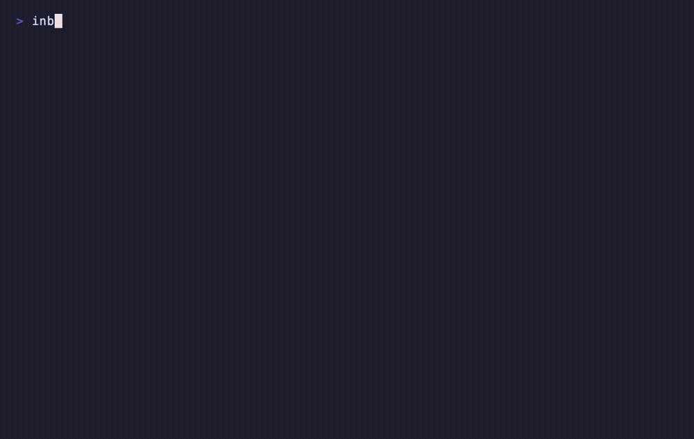

Case Study · Open Source · BYOK
Inbox to Action — Agentic Email Triage
One command, one agentic pass: your inbox classified, summarized, turned into tasks, and replies drafted — pip install inbox-to-action. It never sends an email, and with the Ollama provider your mail never leaves your machine.
01Why it exists
Most people process email with four separate tools: a client to read, a task manager to capture to-dos, a calendar to block time, and an AI summarizer for long threads. Every message gets handled four times. inbox-to-action collapses all four into one agentic pass — from the terminal, with hard safety guarantees.
02See it run
One command against the bundled mock inbox — uvx inbox-to-action run --mock — zero install, zero setup:

03How it works
- FetchPulls unread Gmail (last 24h by default) using only the readonly + compose scopes — there is no send scope and no send API call anywhere in the codebase, enforced by a test.
- ClassifyEach message is triaged into action_needed · fyi · newsletter · noise by whichever LLM provider you bring.
- Summarize & extractLong threads become summaries; actionable messages become tasks (optional Todoist push); calendar-relevant mail gets flagged.
- Draft, never sendReplies are drafted and saved to Gmail drafts for human review. Worst case under prompt injection: a draft you choose not to send.
- Pick your provider — BYOKOllama (fully local, nothing leaves your machine), keyless Claude Code session, OpenRouter, OpenAI, NVIDIA NIM, or Anthropic. Privacy posture is a config choice, documented per provider.
- Run it anywherepip / pipx / uvx zero-install trial, Docker image on GHCR, MCP server for Claude Code + a packaged Claude skill. Registry manifests for the Official MCP Registry, Smithery, and Glama ship in the repo.
04Results
6LLM providers
4→1tools collapsed
0emails auto-sent
100%local option
- 4 tools collapsed into 1 agentic pass — read, triage, tasks, drafts
- Security by construction: no send scope exists; drafts-only is enforced by test, not policy
- True BYOK: 6 providers, including a fully-local path (Ollama) and a keyless path (Claude Code)
- Distribution done properly: PyPI, Docker/GHCR, MCP server, CI on every push, MIT license, mock inbox for zero-setup trial
05Stack
Python 3.11+Gmail API (readonly + compose)OllamaOpenRouterClaude Code (keyless)NVIDIA NIMMCPDocker / GHCRGitHub Actionspytest